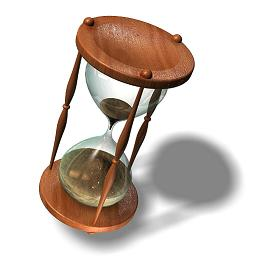

NEWS! We won an IBM Eclipse Innovation Grant 2005, so there will be a VInTiMe plugin for Eclipse. Read more here. |
VInTiMe: Combining High-Level Finesse with Low-Level Muscle |
|
|
 |
VInTiMe (Verifier of INtegrated TImed ModEls) [ABGKOS04] is a suite of tools that combines high-level expressive power, unassisted property-preserving model-reduction and low-level distributed model checking power to describe and verify complex Real-Time Systems designs and their properties. VInTiMe comprises the integration of the tools Lapsus, VTS, ObsSlice and Zeus.Lapsus [BF99, Br00] translates real-time system designs based on fixed-priority scheduling into timed automata. Succinctly, it uses Worst-Case Completion Times (WCCT) and best-case completion times (BCCT) –which can be calculated using analytical techniques provided by those theories– to build an abstract and analyzable model of the system based on timed automata. VTS [ABKO04, home page] is a notation for expressing real-time requirements in a visual and friendly, yet powerful, language, by means of negative scenarios. A VTS scenario is basically an annotated partial order of relevant events, denoting a (possibly infinite) set of matching time-stamped executions. VTS is meant to existentially predicate on system executions. ObsSlice [BGO04, home page] is an optimization tool suited for the verification of networks of timed automata using virtual observers, the same kind of observers that VTS produces. It automatically discovers the set of modeling elements that can be safely ignored at each location of the observer by synthesizing behavioral dependence information among components. ObsSlice is fed with a network of timed automata and generates a transformed network which is equivalent to the one provided, up to branching-time observation. Zeus: [BOS03, BOS04] is a distributed model checker that evolves from KRONOS. As such, it works over models expressed in terms of timed automata, being its main features a rigorous correctness proof for its distributed algorithm, and a high degree of flexibility due to its software architecture approach. |